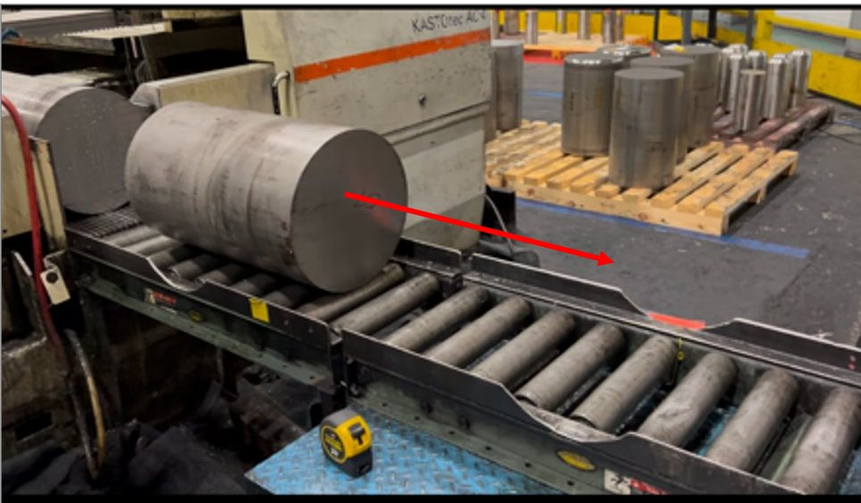
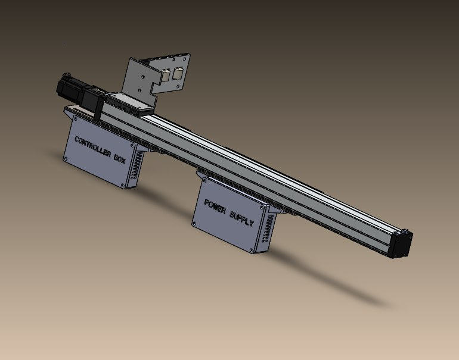
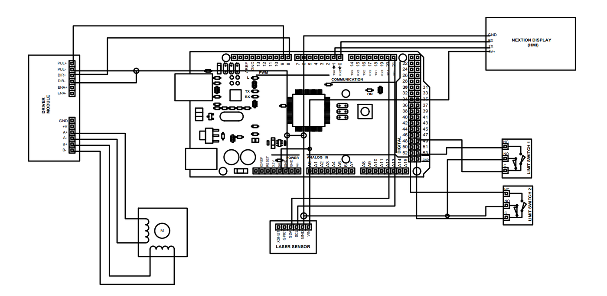
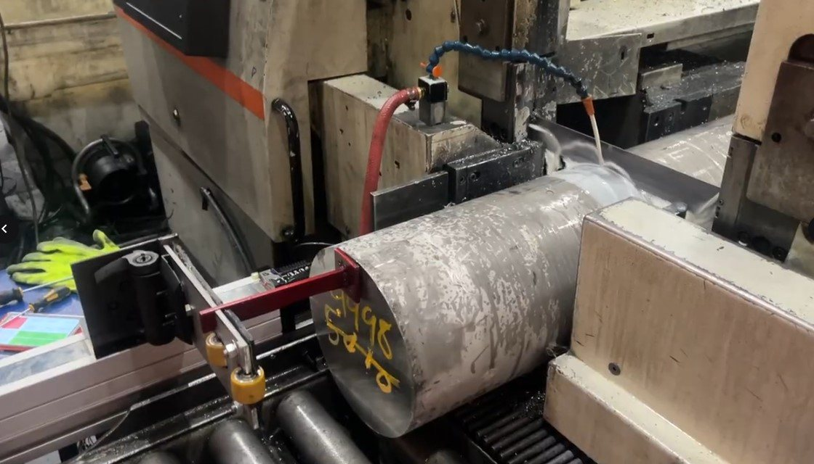

Automated billet measurement for an aerospace cutting line
A linear-scale retrofit for Howmet Aerospace that measures billet to 0.0008 in for about $1,000 — replacing a handheld tape measure.

The problem
Howmet's saw operators measured aerospace billet with a handheld tape measure, accurate to about 1/16 in. Cuts came out underweight, and underweight aerospace stock cannot be recovered into any other part number — it is scrap. The line had a second failure mode: operators would advance the billet after a cut without raising the contact plate, and the impact would break the stopper. A previous commercial scale system had died exactly this way.

Approach
The job was to automate the measurement without replacing the saw, inside 16 weeks and a $2,000 project budget. I ran the team from problem definition through concept selection to a working prototype, and held the design to a real spec: 0.001 in accuracy, 50 in of travel, and robustness to the operator error that had destroyed its predecessor.
- Costed and compared three drive architectures — belt, ball screw and track actuator — and selected between them with a QFD and weighted decision matrix rather than by preference. The screw system won on 42 points to 38 and 37, at roughly $1,000 against $10,000 for the belt system that was marginally more repeatable.
- Solved the impact problem mechanically: a hinged-flap stopper with rollers and an extension arm that yields when a billet hits it, designed to a factor of safety of 1.15+ at the expected 150 lbf impact.
- Built the automation chain: a programmable FUYU FSL80 linear guide driven by a NEMA 23 stepper with built-in encoder, Arduino control, an HMI for the operator, limit switches for travel bounds, and a VL53L0X time-of-flight sensor prototyped as an alternative measurement path.
- Wrote the safety case — physical guards, emergency stop, grounding and insulation — against the NSPE code of ethics.


Results
The prototype measured and positioned against real billet on Howmet's line, and the work was presented at the 2025 Georgia Southern Student Research Symposium.

What stuck
The cheaper design won. Being able to show why on a decision matrix, rather than argue for it, is what made that an engineering decision instead of an opinion. And the most valuable engineering on this project wasn't the electronics — it was designing for the operator who will never read the manual.